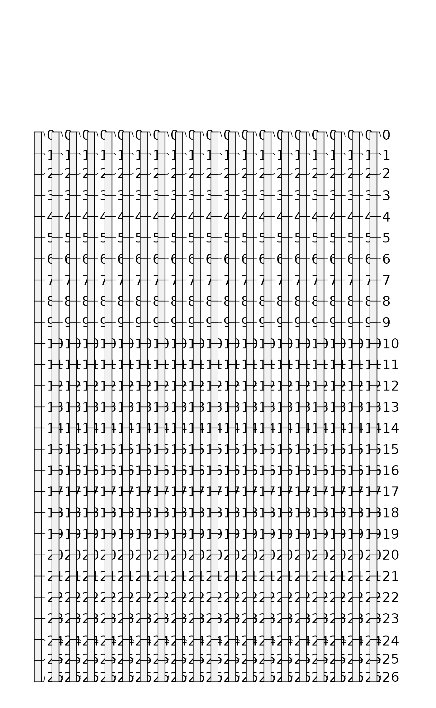

A method for "slicing" of SoilProfileCollection objects into constant depth intervals. Now deprecated, see [dice()].
Usage
slice.fast(object, fm, top.down = TRUE, just.the.data = FALSE, strict = TRUE)
# S4 method for class 'SoilProfileCollection'
slice(object, fm, top.down = TRUE, just.the.data = FALSE, strict = TRUE)
get.slice(h, id, top, bottom, vars, z, include = "top", strict = TRUE)Arguments
- object
a SoilProfileCollection
- fm
A formula: either
integer.vector ~ var1 + var2 + var3where named variables are sliced according tointeger.vectorOR where all variables are sliced according tointeger.vector:integer.vector ~ ..- top.down
logical, slices are defined from the top-down:
0:10implies 0-11 depth units.- just.the.data
Logical, return just the sliced data or a new
SoilProfileCollectionobject.- strict
Check for logic errors? Default:
TRUE- h
Horizon data.frame
- id
Profile ID
- top
Top Depth Column Name
- bottom
Bottom Depth Column Name
- vars
Variables of Interest
- z
Slice Depth (index).
- include
Either
'top'or'bottom'. Boundary to include in slice. Default:'top'
References
D.E. Beaudette, P. Roudier, A.T. O'Geen, Algorithms for quantitative pedology: A toolkit for soil scientists, Computers & Geosciences, Volume 52, March 2013, Pages 258-268, 10.1016/j.cageo.2012.10.020.
Examples
library(aqp)
# simulate some data, IDs are 1:20
d <- lapply(1:20, random_profile)
d <- do.call('rbind', d)
# init SoilProfileCollection object
depths(d) <- id ~ top + bottom
head(horizons(d))
#> id top bottom name p1 p2 p3 p4 p5 hzID
#> 1 1 0 28 H1 9.201405 -6.835655 0.8525996 4.824201 -7.994531 1
#> 2 1 28 37 H2 15.312323 -5.353120 -3.0780103 22.126603 -5.419231 2
#> 3 1 37 64 H3 24.106495 -6.386571 2.0878183 20.331013 0.581044 3
#> 4 1 64 91 H4 19.940854 -4.466280 1.4647572 17.199065 -13.806440 4
#> 5 10 0 13 H1 14.852170 -4.626349 -3.5354367 5.675210 -1.138095 5
#> 6 10 13 34 H2 17.246366 -2.943876 -23.2641706 11.316858 5.286298 6
# generate single slice at 10 cm
# output is a SoilProfileCollection object
s <- dice(d, fm = 10 ~ name + p1 + p2 + p3)
# generate single slice at 10 cm, output data.frame
s <- dice(d, 10 ~ name + p1 + p2 + p3, SPC = FALSE)
# generate integer slices from 0 - 26 cm
# note that slices are specified by default as "top-down"
# result is a SoilProfileCollection
# e.g. the lower depth will always by top + 1
s <- dice(d, fm = 0:25 ~ name + p1 + p2 + p3)
par(mar=c(0,1,0,1))
plotSPC(s)

# generate slices from 0 - 11 cm, for all variables
s <- dice(d, fm = 0:10 ~ .)
print(s)
#> SoilProfileCollection with 20 profiles and 220 horizons
#> profile ID: id | horizon ID: sliceID
#> Depth range: 11 - 11 cm
#>
#> ----- Horizons (6 / 220 rows | 10 / 13 columns) -----
#> id sliceID top bottom hzID name p1 p2 p3 p4
#> 1 1 0 1 1 H1 9.201405 -6.835655 0.8525996 4.824201
#> 1 2 1 2 1 H1 9.201405 -6.835655 0.8525996 4.824201
#> 1 3 2 3 1 H1 9.201405 -6.835655 0.8525996 4.824201
#> 1 4 3 4 1 H1 9.201405 -6.835655 0.8525996 4.824201
#> 1 5 4 5 1 H1 9.201405 -6.835655 0.8525996 4.824201
#> 1 6 5 6 1 H1 9.201405 -6.835655 0.8525996 4.824201
#> [... more horizons ...]
#>
#> ----- Sites (6 / 20 rows | 1 / 1 columns) -----
#> id
#> 1
#> 10
#> 11
#> 12
#> 13
#> 14
#> [... more sites ...]
#>
#> Spatial Data:
#> [EMPTY]
# compute percent missing, for each slice,
# if all vars are missing, then NA is returned
d$p1[1:10] <- NA
s <- dice(d, 10 ~ ., SPC = FALSE, pctMissing = TRUE)
head(s)
#> hzID id top bottom name p1 p2 p3 p4
#> 1 1 1 10 11 H1 NA -6.8356554 0.8525996 4.824201
#> 2 5 10 10 11 H1 NA -4.6263494 -3.5354367 5.675210
#> 3 11 11 10 11 H1 6.009662 1.3820162 -12.1439838 -13.858707
#> 4 15 12 10 11 H2 6.511279 -4.4183782 -25.1033888 -1.818884
#> 5 20 13 10 11 H1 10.972373 -1.6643068 -6.6952467 -10.342752
#> 6 24 14 10 11 H1 3.773004 -0.5507985 1.1623836 9.395569
#> p5 sliceID .oldTop .oldBottom .pctMissing
#> 1 -7.994531 11 0 28 0.1666667
#> 2 -1.138095 102 0 13 0.1666667
#> 3 -1.401404 208 0 27 0.0000000
#> 4 -4.632886 274 9 26 0.0000000
#> 5 -4.558176 367 0 28 0.0000000
#> 6 -14.160065 462 0 18 0.0000000
if (FALSE) { # \dontrun{
##
## check sliced data
##
# test that mean of 1 cm slices property is equal to the
# hz-thickness weighted mean value of that property
data(sp1)
depths(sp1) <- id ~ top + bottom
# get the first profile
sp1.sub <- sp1[which(profile_id(sp1) == 'P009'), ]
# compute hz-thickness wt. mean
hz.wt.mean <- with(
horizons(sp1.sub),
sum((bottom - top) * prop) / sum(bottom - top)
)
# hopefully the same value, calculated via slice()
s <- dice(sp1.sub, fm = 0:max(sp1.sub) ~ prop)
hz.slice.mean <- mean(s$prop, na.rm = TRUE)
# they are the same
all.equal(hz.slice.mean, hz.wt.mean)
} # }